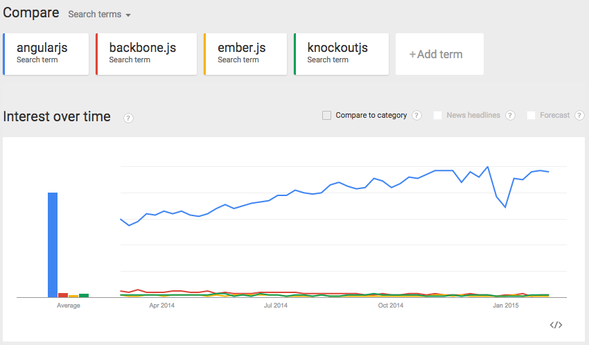
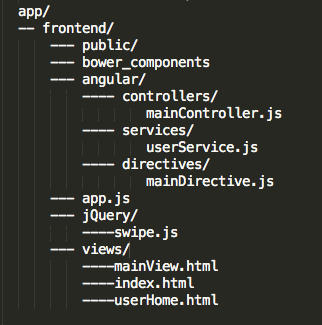
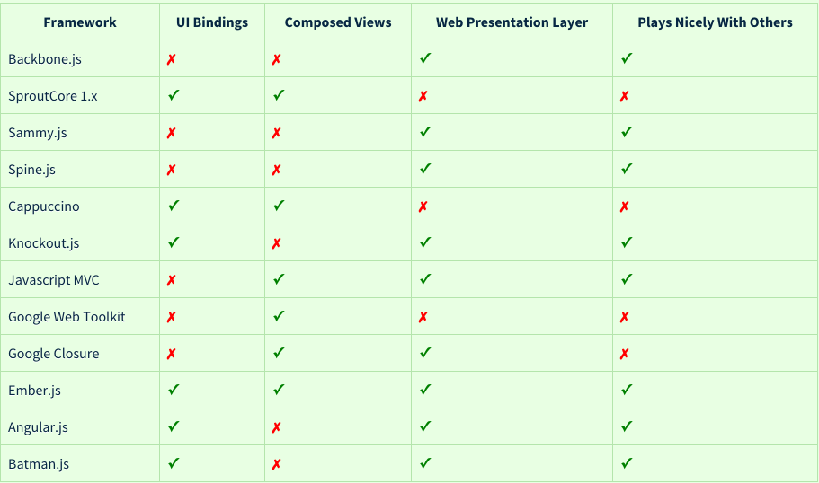

MVC
From Design Pattern to AngularJS
MVC PATTERN
MVC is an architectural design pattern that encourages application organization through a separation of concerns.
It enforces the isolation of business data (Models) from user interfaces (Views) with a third component (Controllers) traditionally managing logic and user-input.
Confused?
MVC Restaurant
controller
MVC**
Light weight
V 1.3.x
For the Comunity Support
FOSS
For Productivity
Gulp or Grunt
Karma-Jasmine & E2E Protractor
80% less code than with jQuery on same functionality
bower & npm for dependency injection management
For Interest
Let's begin
ng-app
app.js
ng-app
app.js
var myApp = angular.module('myAppName', []);
in your HTML
&
ng-controller
controllerName_spec.js
controllerName.js
ng-controllerName in html
myController.js
angular.module('myAppName').controller('myController',
function($scope){
$scope.name = "Giorgia";
});
in your HTML
&
{{name}}
Most common services
- $http
- $resource
- $inject
- $mock
myService.js
angular.module('myController').factory('myService', function($http){
});
Before I continue...
angular.module('myAppName').factory('myService', function($http){
return {
getNamesFromSomewhere: function(){
return $http.get()
}
}
});
in your HTML
INJECT YOUR SERVICE
angular.module('myController').controller('myController',
function($scope, myService){
$scope.name = "giorgia"
myService.getNamesFromSomewhere().then();
});
File Structure
Other MVC
sources
Angular Official Documentation